Déploiement d'une solution de sauvegarde et de continuité d'activité avec Veeam
Ce projet présente le déploiement d'une solution de sauvegarde et de Plan de Reprise d'Activité (PRA)
basée sur Veeam Backup & Replication,dans un environnement multi-hyperviseurs mêlant VMware et Hyper-V,
avec stockage off-site sur NAS Synology.
Technologies utilisées
Windows Server
Synology
VMware
Linux
Hyper-V
Veeam Backup & Replication
Solution de sauvegarde et de restauration d'infrastructure. Elle permet de protéger
les machines virtuelles VMware et Hyper-V, de définir des politiques RPO/RTO et de
valider les procédures de restauration en cas d'incident.
VMware vSphere / ESXi
Hyperviseur de type 1 hébergeant les machines virtuelles critiques de l'infrastructure.
Il constitue la cible principale des sauvegardes Veeam dans ce projet.
Hyper-V
Hyperviseur de type 1 Microsoft utilisé pour les machines virtuelles Windows. Il est intégré
à Veeam pour la sauvegarde des VM Hyper-V ainsi que de la machine physique hôte.
Windows Server
Système d'exploitation hébergeant le serveur Veeam Backup & Replication.
Il sert également de plateforme pour les machines virtuelles Windows incluses dans les jobs de sauvegarde.
Synology DSM
NAS Synology utilisé comme repository de sauvegarde. Il reçoit les copies
de sauvegarde déportées afin de garantir la résilience en cas de sinistre sur le site principal.
Linux
Système d'exploitation des machines virtuelles Linux incluses dans les jobs de sauvegarde.
Il permet de valider la compatibilité de Veeam avec des environnements mixtes Windows/Linux.
Sommaire
I. Objectifs
1. Segmentation Réseau
2. Inventaire de machines
3. Composants & Architecture Veeam
4. Rôle de chaque composant Veeam
III. Schéma de l'infrastructure Veeam
1. Définition
2. RPO/RTO par criticité
1. Backup Job
2. Copy Backup Off-site
1. Backup 1 : Sauvegarde d'une machine virtuelle Vmware critique
2. Backup 2 : Sauvegarde d'une machine virtuelle Hyper-V standard
3. Backup 3 : Sauvegarde de la machine physique Hyper V
1. Backup 1 : Sauvegarde des machines virtuelles
2. Backup 2 : Sauvegarde des machines virtuelles
3. Backup 3 : Sauvegarde de la machine physique
1. Composant Veeam spécifique à la restauration
2. Scénarios de restauration – Mise en situation
IX. Conclusion
I. Objectif
L'objectif est de bâtir une infrastructure de sauvegarde résiliente, capable de répondre à des incidents variés : panne matérielle, corruption de VM, suppression accidentelle ou attaque ransomware.
Pour cela, des politiques RPO/RTO ont été définies selon le niveau de criticité de chaque machine, des backup jobs ont été configurés et automatisés sur les deux environnements hyperviseurs, et des procédures de restauration ont été validées à travers six scénarios opérationnels concrets.
Ce travail s'inscrit dans une démarche de résilience informatique et de conformité aux
bonnes pratiques de gestion de la continuité d'activité.
II. Inventaire de l'Infrastructure
Avant toute configuration, un inventaire complet de l'infrastructure existante a été réalisé.
Cet inventaire couvre la segmentation réseau, les machines physiques et virtuelles présentes,
ainsi que les composants Veeam déployés et leurs rôles respectifs au sein de l'architecture.
1. Segmentation réseau
J'ai segementé plusieurs réseaux pour plus de sécurité et de performance.
Zone
Sous-réseau
Usage
LAN 1
172.16.0.0/24
Production Principale (VMware)
LAN 2
192.168.200.0/24
Zone Secondaire (Hyper-V)
LAN Off-Site
192.168.148.0/24
Stockage Immuable
Tableau 1 — Segmentation réseau
2. Inventaire des machines
Nous distinguons deux niveaux de criticité pour adapter les politiques de rétention (RPO) et de temps de restauration (RTO).
LAN 1 : 172.16.0.0/24
Machine
Adresse IP
Rôle
Criticité
ESXi-01
172.16.0.100
Hyperviseur Type 1
Critique
ESXi-02
172.16.0.101
Hyperviseur Type 1
Critique
VCenter
172.16.0.150
Gestion d'hôtes VMware
Critique
SRV-AD
172.16.0.1
Active Directory / DNS
Critique
SRV-BROKER
172.16.0.5
Broker RDS
Critique
RDSHOST1
172.16.0.3
RDS Session Host
Standard
RDSHOST2
172.16.0.4
RDS Session Host
Standard
SRV-FILER
172.16.0.78
Serveurs de fichier
Standard
Tableau 2 — Inventaire LAN 1
LAN 2 : 192.168.200.0/24
Machine
Adresse IP
Rôle
Criticité
HYPERV-01
192.168.200.200
Hyperviseur Type 1
Critique
SRV-GATEWAY
192.168.200.2
RDS Gateway
Critique
SRV-GLPI
192.168.200.1
Serveur web
Standard
Tableau 3 — Inventaire LAN 2
3. Composants & Architecture Veeam
Veeam nécessite plusieurs composants pour fonctionner correctement. Chaque composant Veeam a un rôle spécifique dans l'architecture de sauvegarde et de restauration.
Machine
Rôle
Réseau
Adresse IP
SRV-VEEAM
Backup Server
LAN 01
172.16.0.10
PROXY-01
Backup Proxy
LAN 01
172.16.0.12
NAS-01
Repository NAS
LAN 01
172.16.0.2
REPO-01
Repository Windows Server
LAN 01
172.16.0.11
PROXY-02
Proxy Veeam Hyper-V
LAN 02
192.168.200.21
REPO-02
Repository Windows Server
LAN 02
192.168.200.20
NAS-02
Repository NAS
LAN 02
192.168.200.128
NAS-03
NAS isolé
LAN Off-site
192.168.148.128
Linux-REPO
Repository Linux Hardened
LAN Off-site
192.168.148.57
Tableau 4 — Composants Veeam
4. Rôle de chaque composant Veeam
BS
Backup Server
C'est le serveur principal de Veeam, le cerveau de l'infrastructure. Il gère les jobs de sauvegarde, la planification, la communication entre tous les composants Veeam.
BP
Backup Proxy
Le proxy est le moteur de traitement des données. C'est lui qui lit les données des VM ou serveurs, puis applique la compression, la déduplication et le chiffrement avant l'envoi vers le stockage.
Re
Repository
Le repository est simplement l'endroit où les fichiers de sauvegarde sont stockés (.vbk, .vib, .vrb). Son rôle est de conserver les données de manière fiable.
III. Schéma de l'infrastructure Veeam
Le schéma ci-dessous représente l'architecture globale de l'infrastructure Veeam déployée.
Cliquez sur l'image pour l'agrandir.
Zoom
Schéma de l'infrastructure Veeam
IV. Politique de Continuité (RPO / RTO)
Cette section définit les objectifs de récupération pour garantir la résilience de l'infrastructure
en cas d'incident.
1. Définition
RPO (Recovery Point Objective) : Perte de données maximale admissible en cas d'incident.
RTO (Recovery Time Objective) : Délai maximal de rétablissement du service après un incident.
2. RPO/RTO par criticité
Criticité
RPO
RTO
Justification
Critique
2h
<10 sec
Services vitaux nécessaires à l'activité immédiate des utilisateurs.
Standard
24h
<20 min
Services dont l'indisponibilité temporaire est tolérable sans impact majeur.
V. Politique de sauvegarde
Cette section détaille les paramètres techniques appliqués aux jobs de sauvegarde
selon l'importance des machines.
1. Backup Job
Les Backup Jobs définissent quelles machines protéger, vers quel repository, à quelle fréquence
et selon quelle politique de rétention. Chaque job est configuré en fonction du niveau de
criticité des machines cibles afin de respecter les objectifs RPO/RTO définis.
Backup Job
Tâche planifiée dans Veeam Backup & Replication qui orchestre la sauvegarde d'une ou
plusieurs machines (virtuelles ou physiques) vers un repository défini. Il configure le mode
de sauvegarde (Full / Incrémental), la fréquence d'exécution, la rétention des points de
restauration et les options de traitement applicatif (VSS).
Politique de sauvegarde pour les backup Job de l'infrastructure
Critère
Politique CRITICAL
Politique STANDARD
Mode de sauvegarde
Forward Incremental
Forward Incremental
Fréquence
Incrémental toutes les 2h (12/jour)
1 sauvegarde/jour (incremental)
RPO
2h
24h
Rétention onsite
7 jours = 84 restore points
14 jours = 14 restore points
Synthetic Full
1/semaine
1/semaine
Active Full
1/mois
1/mois
Application-Aware Processing
Activé
Activé
Offsite
Backup Copy Job Snapshot Immuables / Linux Hardened
Hyper Backup Synology
GFS Weekly
12 mois
2 mois
GFS Yearly
2 ans
—
Objectif RTO
<10 sec
<20min
2. Copy Backup Off-site
Afin de respecter la stratégie 3-2-1-1, une copie des sauvegardes est stockée sur une machine
offsite avec une immutabilité des données pour les ressources critiques. Les sauvegardes
sont copiées via Veeam Backup Copy Jobs ou Hyper Backup Synology selon le type de machine.
Copy Backup
Permet de copier le dernier point de restauration d'un backup job vers un autre emplacement sécurisé,
indépendamment de la chaîne du backup job.
Hyper Backup
Outil de sauvegarde intégré aux NAS Synology. Il permet de copier les données du NAS vers
un autre emplacement sécurisé : disque externe, autre NAS, serveur distant ou cloud.
Backup JOB
Technologie
Target
Immuabilité
Critical : Vmware_To_LUN
Backup Copy
LINUX-REPO
Linux Hardened
Standard : HyperV_to_NAS-02
Hyper Backup
NAS-03
Snapshot Replication
Critique : Host HyperV_To_REPO-02
Backup Copy
NAS-03
Snapshot Replication
VI. Mes configuration de sauvegardes de l'infrastructure
Cette section détaille les configurations de chaque backup de mon infrastructure . Une backup contient une backup job et une copy backup job
au sein de l'infrastructure Veeam.
1. Backup 1 : Sauvegarde d'une machine virtuelle Vmware critique
A. Topologie
Voici la topologie de la backup 1 qui protège les machines virtuelles critiques de l'environnement VMware.
Zoom
Topologie — Backup 1 : Vmware critique
B. Backup Job 1 : Vmware_To_LUN : VMWARE CRITICAL
Ce Backup job assure la protection des machines virtuelles identifiées comme
Critiques au sein de l'environnement VMware
Paramètre
Détail Technique
Nom du Job
VM_CRITICAL_TO_LUN
Source
Cluster VMware (ESXi-01, ESXi-02)
Destination
REPO-01 (LUN iSCSI Synology)
Criticité
Critique
Proxy utilisé
PROXY-01
La LUN Synology
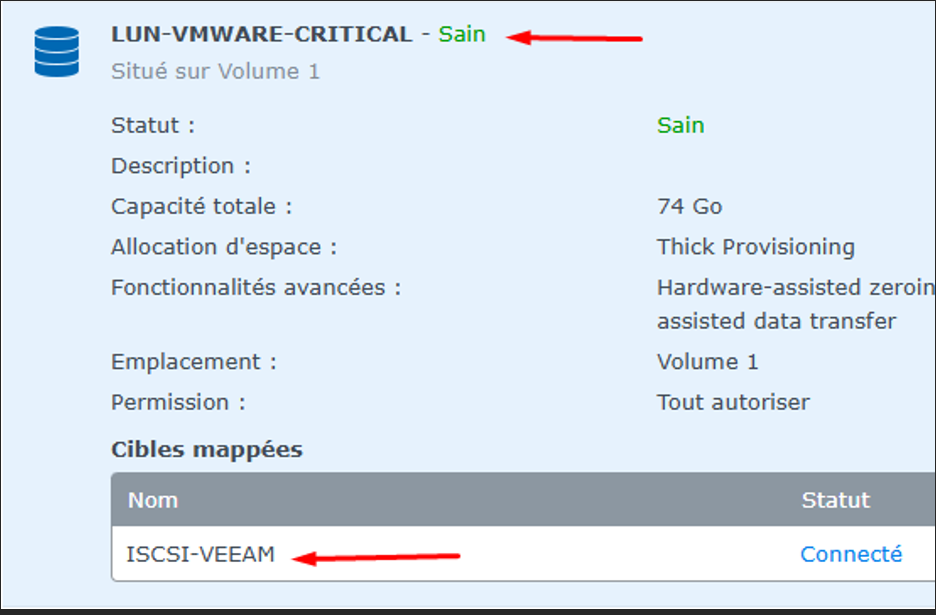
Synology - LUN ISCSi
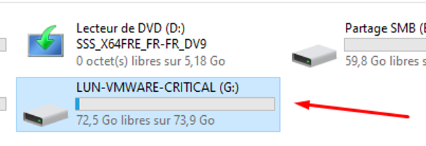
Target iSCSI
J'ai créé une LUN liée à une target iSCSI « iSCSI-VEEAM »
Paramètre de stockage du Backup Job 1
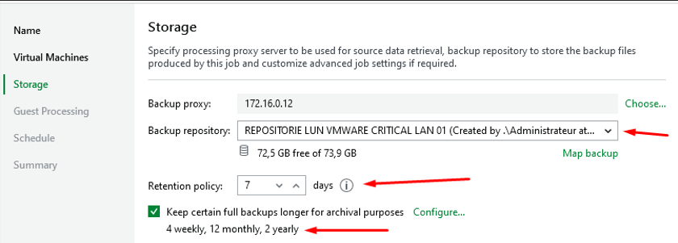
Paramètre de stockage
Backup Proxy
J'ai choisi le mode de transport en réseau afin d'effectuer le traitement des sauvegardes avec le Backup Proxy 172.16.0.12
Backup Repository
J'ai choisi mon repositoire LUN iSCSI comme destination de stockage. C'est à cet emplacement que les fichiers de sauvegarde sont enregistrés
Rétention Policy
J'ai défini une rétention de 7 jours. Veeam conservera les points de restauration sur cette durée. Les sauvegardes plus anciennes que cette période sont automatiquement supprimées pour libérer de l'espace
Paramètre GFS
J'ai activé la conservation GFS pour garder certaines sauvegardes full plus longtemps à des fins d'archivage. Je conserverai 4 hebdomadaires, 12 mensuelles et 2 annuelles, ce qui me permet d'avoir des points de restauration historiques pour ces VM critique
Paramétrage des fréquences
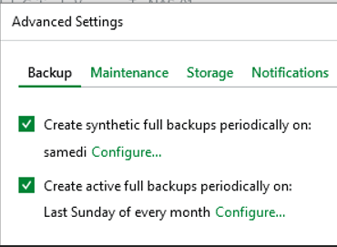
Paramètre de fréquence backup Full
J'ai mis une Synthetic Full une fois par semaine (samedi)
J'ai mis une Active Full une fois par mois
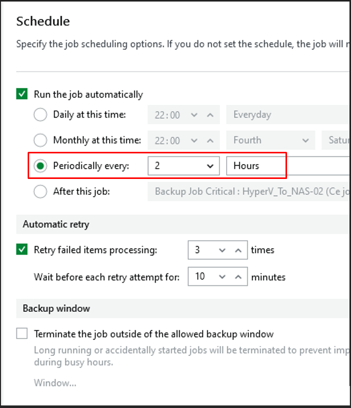
Paramètre de fréquence
J'ai paramétré une exécution automatique toutes les deux heures afin de respecter un RPO de 2h comme énoncé dans la politique de stockage
C. Backup Copy 1: Backup-Job1_To_Linux-Hardened
Ce Copy Job permet de copier les backups des VM critique VMware vers un repositorie
Linux hors du site de production avec la fonctionnalité Hardened pour l'immutabilité
des copy. Une chaîne de sauvegarde indépendante sera alors créée.
Paramètre
Détail de la Configuration
Nom du Job
Backup-Job1_To_Linux-Hardened
Cible
Repository Linux Hors-site (Offsite)
Type de stockage
Partition 100 Go / Système de fichiers XFS
Sécurité
Immutabilité active (Hardened Repository)
Mode de copie
Immediate Copy (Synchronisation temps réel)
Utilisateur
Compte dédié « veeam » (Non-root)
Configuration de la partition XFS Linux
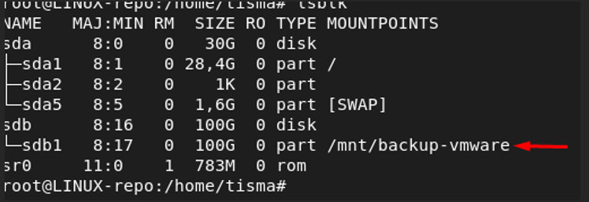
Configuration partition XFS
J'ai créé un point de montage liée à une partition de 100G pour ce repositorie configuré en xfs pour la fonctionnalité d'immutabilité
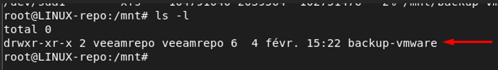
Répertoire backup-vmware
J'ai créé un utilisateur dédié à Veeam pour ne pas utiliser le compte root. J'ai mis en propriétaire du point de montage l'utilisateur veeam et j'ai donné les permission en lecture/écriture/exécution au propriétaire du point de montage et exécution et lecture pour le groupe et es autres
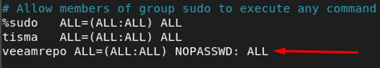
Configuration sudo
Pour que Veeam puisse effectuer des modifications sur la machine linux, l'utilisateur veeam doit utiliser le mode sudo sans mot de passe. J'ai donc ajouté la ligne ALL = (ALL :ALL) NOPASSWD : ALL pour effectuer cela
Paramètre de stockage du Copy Backup 1
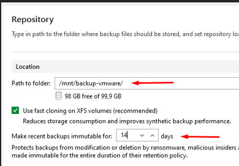
Paramètre du repository Linux Hardened
J'ai ciblé le point de montage linux de 100Go en tant que repositorie veeam et activé l'immutabilité
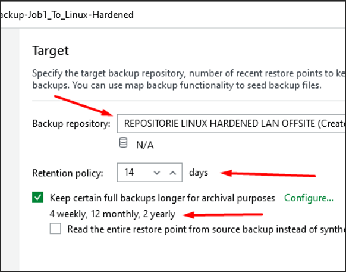
Paramètre de stockage
Je choisi le serveur Linux Offsite en tant que repository distant, ainsi qu'une rétention plus élevée que celle du backup job, afin d'archiver davantage de sauvegardes en cas d'incident majeur.
2. Backup 2 : Sauvegarde d’une machine virtuelle Hyper-V standard
Je vais vous présenter la Backup 2 qui concerne la sauvegarde des machines virtuelles
Standard hébergées sur l’environnement Hyper-V.
A. Topologie
Voici la topologie de la backup 2 qui protège les machines virtuelles standards de l'environnement Hyper-V.
Zoom
Topologie — Backup 2 : Hyper-V standard
B. Backup Job 2 : HyperV_To_NAS-02 — HYPER-V STANDARD
Ce Backup Job permet de copier les machines virtuelles
Standard hébergées sur l’environnement
Hyper-V vers le repository NAS-02
situé sur le réseau LAN 02.
Paramètre
Détail de la Configuration
Nom du Job
HyperV_To_NAS-02
Source
Infrastructure Microsoft Hyper-V (LAN 02)
Destination
Repository NAS-02 (Synology)
Criticité
Standard (RPO 24h / RTO < 20 min)
Proxy utilisé
Proxy-02 (LAN 02)
Paramètre de stockage du Backup Job 2
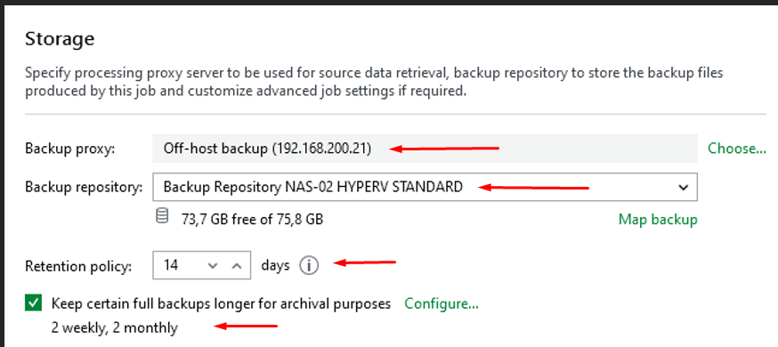
Paramètre de stockage
Backup Proxy
J’ai choisi le mode Off-host backup afin d’effectuer le traitement des sauvegardes avec le Backup Proxy 192.168.200.21
Backup Repository
J’ai configuré le repository NAS-02 comme destination de stockage. C’est à cet emplacement que les fichiers de sauvegarde sont enregistrés
Rétention Policy
J’ai défini une rétention de 14 jours. Veeam conservera les points de restauration sur cette durée
Paramètre GFS
J’ai activé la conservation GFS pour garder certaines sauvegardes full plus longtemps à des fins d’archivage. Nous conservons 2 hebdomadaires et 2 mensuelle. Nous aurons donc moins d’archivage que les vm critique pour économiser les performances
Paramétrage des fréquences
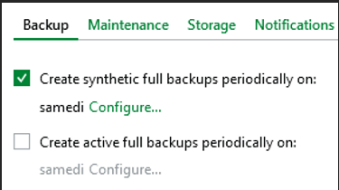
Paramètre de fréquence backup Full
J'ai configuré une Synthetic Full une fois par semaine (samedi).
J'ai configuré une Active Full une fois par mois .
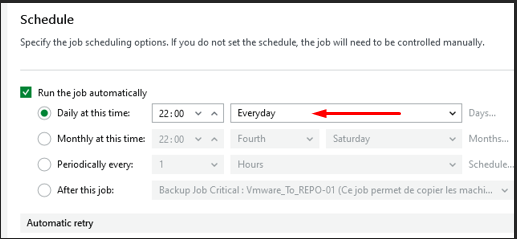
Paramètre de fréquence
J'ai paramétré une exécution automatique quotidienne à 22h afin de respecter la politique de sauvegarde définie pour les machines virtuelles standard.
B. Hyper Backup : NAS-02_To_NAS-03— OFF-SITE
Cette tâche Hyper Backup Synology permet de copier les backup du NAS-02 (LAN02) vers
le NAS-03 (Off-Site).
Paramètre de la fréquence de la tâche
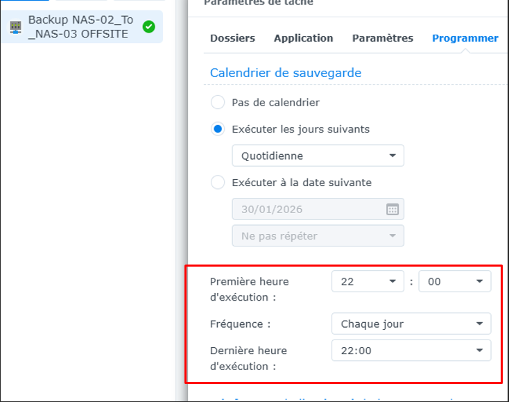
Paramétrage de la fréquence Hyper Backup
Une sauvegarde est exécutée quotidiennement à 22h afin d’assurer une
réplication régulière des sauvegardes vers le site Off-Site.
3. Backup 3 : Sauvegarde d’une machine physique Hyper V
Je vais présenter la Backup 3 qui concerne la sauvegarde de la machine physique
Host Hyper-V.
A. Topologie
Voici la topologie de la backup 3 qui protège la machine physique Host Hyper-V.
Zoom
Topologie — Backup 3 : Machine physique Hyper-V
B. Backup Job 3 : Host-HyperV_To_REPO-02
Ce Job permet de copier le barre metal physique
Hyper V vers un Repository Windows Server du LAN 02
Paramètre
Détail de la Configuration
Nom du Job
Host-HyperV_To_REPO-02
Source
Infrastructure Microsoft Hyper-V (LAN 02)
Destination
REPO-02 (Windows Server)
Criticité
Standard
Proxy utilisé
PROXY-02 (LAN 02)
Paramètre de stockage du Backup Job 3
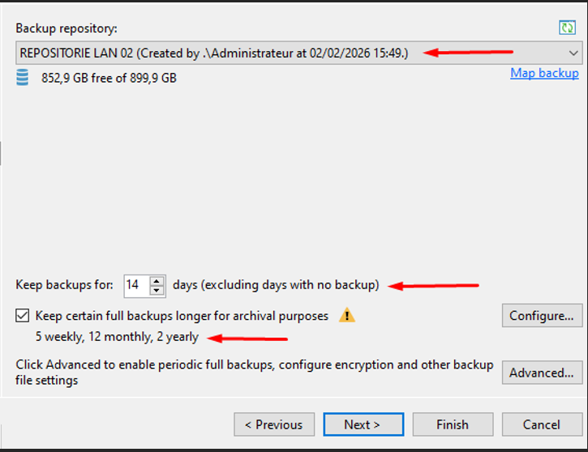
Paramètre de stockage
Backup Repository
J’ai choisi le repository Windows Server de 900Go du LAN 02 comme destination de stockage. C’est à cet emplacement que les fichiers de sauvegarde sont enregistrés
Rétention Policy
J’ai défini une rétention de 14 jours car il s’agit d’une ressource extrêmement critique. Veeam conservera les points de restauration sur cette durée
Paramètre GFS
J’ai activé la conservation GFS pour garder certaines sauvegardes full plus longtemps à des fins d’archivage. Nous conservons 5 hebdomadaires, 12 mensuelle et 2 annuelle. Nous aurons donc plus d’archivage que les autres backup job car il s’agit ici d’une copie très critique
Paramètre de fréquence
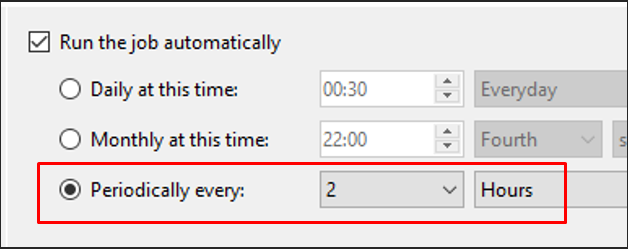
Paramétrage de la fréquence
Le Job s’exécutera automatiquement toutes les 2h afin de respecter un RPO de 2h comme énoncé dans la politique de sauvegarde pour les ressources critique.
C. Copy Backup Job 3 : Vmware_To_LUN : VMWARE CRITICAL
Ce Copy Backup job permet de copier les backup de la machine physique Hyper-V vers un repository NAS-03 situé sur le site Off-Site.
Paramètre
Détail Technique
Nom du Job
BackupJob3_To_NAS-03
Cible
NAS-03 (Off-Site)
Type de stockage
Volume Synology de 172Go
Sécurité
Critique
Mode de copie
Immediate Copy (Synchronisation temps réel)
Paramètre de stockage du Copy Backup 3
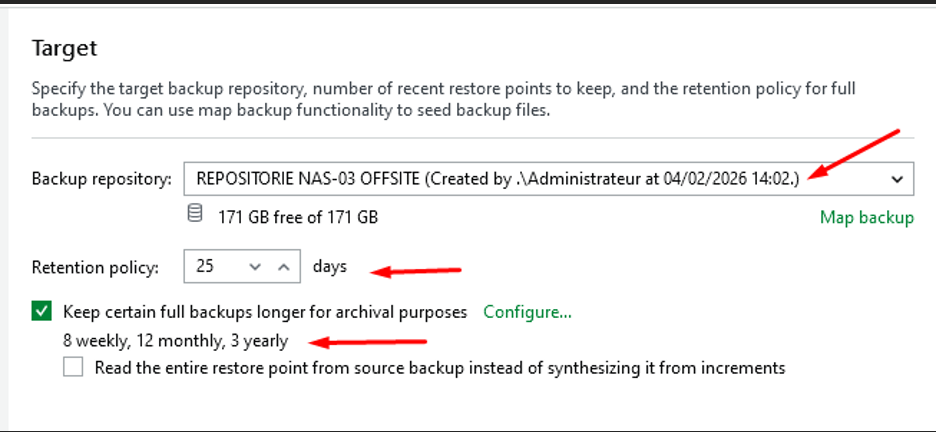
Paramètre de stockage
Backup Repository
J’ai choisi le repository NAS-03 du LAN Off-Site comme destination de stockage. C’est à cet emplacement que les fichiers de sauvegarde sont enregistrés.
Rétention Policy
J’ai défini une rétention de 25 jours. Veeam conservera les points de restauration sur cette durée, plus élevée que le backup job principal.
Paramètre GFS
J’ai activé la conservation GFS avec 8 hebdomadaires, 12 mensuelles et 3 annuelles — la rétention la plus élevée de l’infrastructure, adaptée à la criticité de cette copie off-site.
Immutabilité des backup Off-Site
Pour garantir une immutabilité des backups sur le site distant, j’ai configuré une
snapshot réplication sur le dossier contenant les backups.
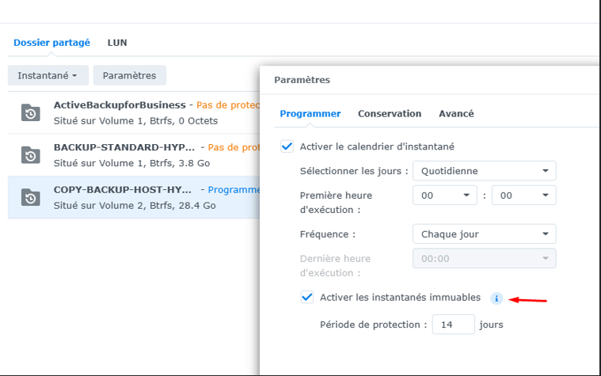
Snapshot Réplication — Immutabilité Off-Site
Des copies immuables des Backup seront stockées tous les jours à 00h et
conservées pendant 14 jours. De cette manière, aucune modification
ne sera possible pour les copy backup.
VII. Tests de validation des sauvegardes
Dans cette section, je vais tester l'exécution de l'ensemble des Backup configuré ci-dessus.
1. Backup 1 : Sauvegarde des machines virtuelles critique VMWARE
Je vais commencer par tester le Backup 1 qui concerne les ressources critiques.
(Backup Job 1 et Copy Backup 1)
A. Backup Job 1 : Vmware_To_LUN VMWARE CRITICAL
1
Exécution du Backup Job
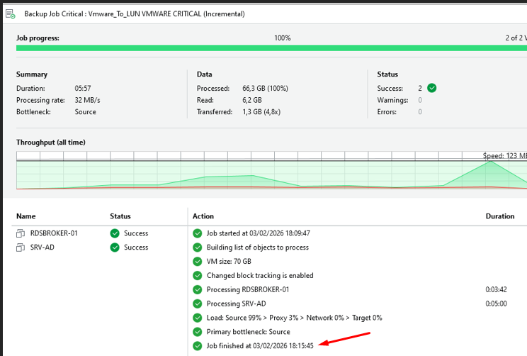
Exécution Backup Job 1 — Vmware_To_LUN
Le Job s'est terminé correctement avec un taux de transfert de 32 MB/s — aucune erreur détectée.
2
Vérification des fichiers dans le repository
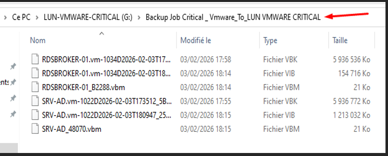
Fichiers de sauvegarde — Repository LUN iSCSI
Les backup sont bien stockés sur le repository LUN iSCSI. Les fichiers .VBK sont présents et accessibles.
Le Copy Job s'est terminé correctement à 72 MB/s — aucune erreur détectée.
2
Vérification des fichiers sur le repository Linux
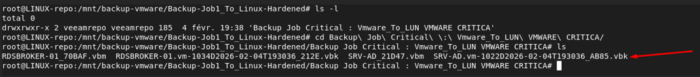
Vérification des fichiers — Repository Linux Hardened (ls -l)
Les backups sont bien stockés sur le repository Linux Hardened. Les fichiers sont présents et accessibles.
3
Test d'immutabilité — Hardened Linux
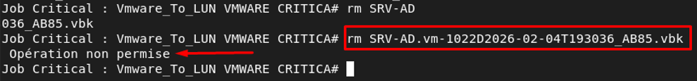
Test immutabilité — Commande rm refusée (Opération non permise)
Impossible de supprimer les backups via la commande rm — l'immutabilité Hardened Linux est bien active. L'opération est refusée.
Backup Job Vmware_To_Linux Hardened : OK
2. Backup 2 : Sauvegarde des machines virtuelles Hyper-V standard
Je teste ensuite le Backup 2 qui concerne les ressources standard.
(Backup Job 2 et Copy Backup 2)
A. Backup Job 2 : HyperV_To_NAS-02
1
Exécution du Backup Job 2
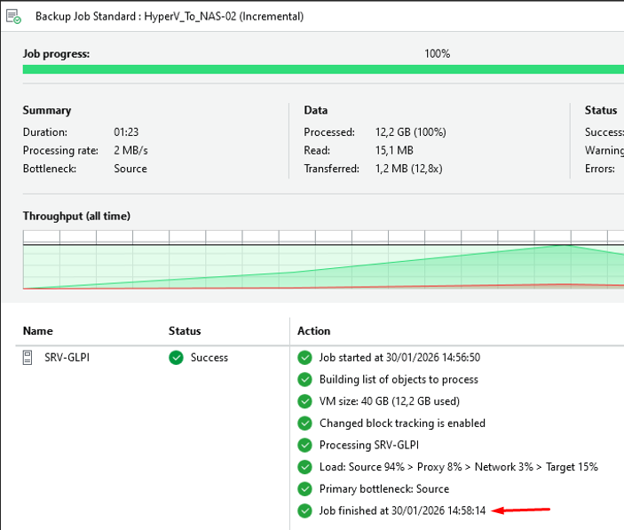
Exécution Backup Job 2 — HyperV_To_NAS-02
Le Job s'est terminé correctement — aucune erreur détectée.
2
Vérification des fichiers dans le repository
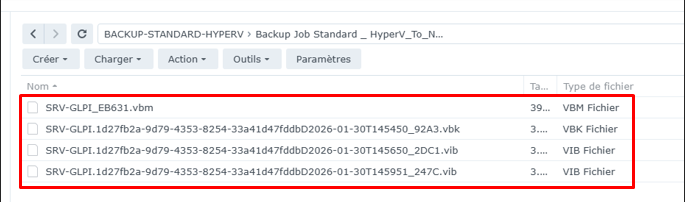
Fichiers de sauvegarde — Repository NAS-02
Les backup sont bien stockés sur le repository NAS. Les fichiers .VIB sont présents et accessibles.
Backup Job HyperV_To_NAS-02 : OK
B. Hyper Backup : NAS-02_To_NAS-03
1
Exécution de la tâche Hyper Backup
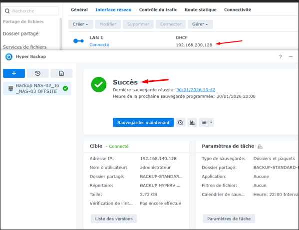
Exécution Hyper Backup — NAS-02_To_NAS-03
La tâche s'est terminée avec succès — aucune erreur détectée.
2
Vérification des backups sur NAS-03
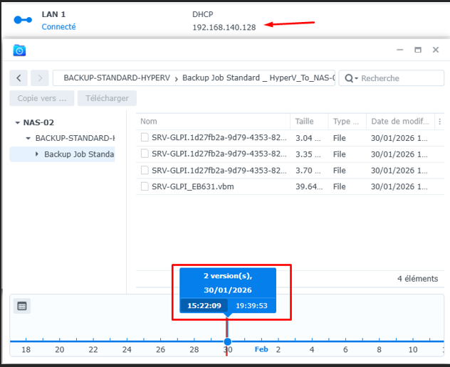
Vérification des backups — Repository NAS-03 (Off-Site)
Les backups ont bien été copiés sur le NAS-03. Les fichiers sont présents et accessibles depuis le site Off-Site.
Backup NAS-02_To_NAS-03 : OK
3. Backup 3 : Sauvegarde de la machine physique Hyper-V
Je teste enfin le Backup 3 qui concerne la sauvegarde de la machine physique Host Hyper-V.
A. Backup Job 3 : Host-HyperV_To_REPO-02
1
Exécution du Backup Job 3
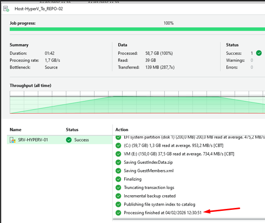
Exécution Backup Job 3 — Host-HyperV_To_REPO-02
Le Job s'est terminé avec succès à 1,616 MB/s — aucune erreur détectée.
2
Vérification des fichiers dans le repository
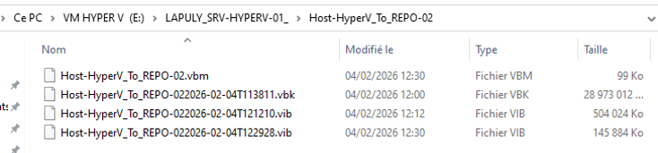
Fichiers de sauvegarde — Repository Windows Server (REPO-02)
Les backups ont bien été copiés sur le repository Windows. Les fichiers .VBM et .VIB sont présents et accessibles.
Backup Job Host-HyperV_To_REPO-02 : OK
B. Copy Backup Job : BackupJob3_To_NAS-03
1
Exécution du Copy Backup Job
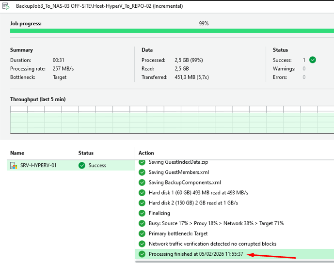
Exécution Copy Backup Job — BackupJob3_To_NAS-03
Le Job s'est terminé avec succès — aucune erreur détectée.
2
Vérification des fichiers sur NAS-03
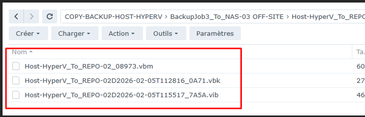
Vérification des fichiers — Repository NAS-03 (Off-Site)
Les backups ont bien été copiés sur le repository NAS Off-Site. Les fichiers sont visibles et accessibles.
3
Test d'immutabilité — NAS Off-Site
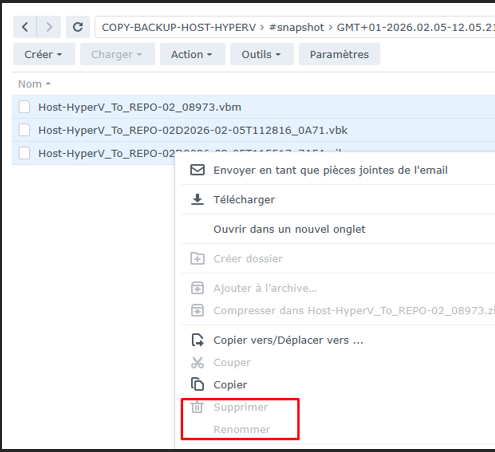
Tentative de suppression — NAS-03
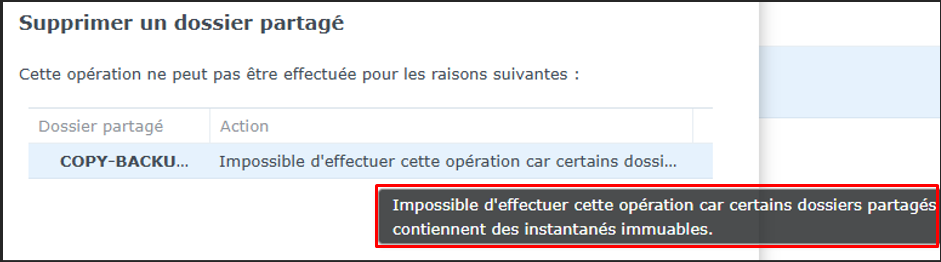
Erreur — Dossier partagé contenant des instantanés immuables
Impossible de supprimer les backups du NAS en raison de leur immutabilité. La suppression est refusée — la protection est bien active.
BackupJob3_To_NAS-03 : OK
VIII. Test de restauration et continuité d'activité en cas d'incident majeur
Cette section présente les méthodes de restauration Veeam permettant de remettre les services en fonctionnement après un incident majeur.
Un incident majeur peut être :
Panne matérielle d'un hyperviseur
Corruption de VM
Attaque ransomware
Suppression accidentelle
Sinistre (incendie, inondation...)
1. Composants Veeam spécifiques à la restauration
Deux fonctionnalités Veeam sont nécessaires lors des restaurations.
Mount Server
Monte les fichiers de sauvegarde et rend leur contenu accessible. Il ouvre le backup, donne accès aux disques VM et sert de passerelle pour lire les données. Dans mon lab, il est installé sur les repositories.
vPower NFS
Utilisé pour les restaurations Instant VM Recovery — la VM démarre directement depuis le backup en quelques secondes via un datastore NFS temporaire. Dans mon lab, vPower NFS est hébergé sur les repositories.
2. Scénarios de restauration — Mise en situation opérationnelle
Cette partie présente les méthodes de restauration illustrées par des scénarios concrets d'incident.
L'objectif est de démontrer la capacité de l'environnement à :
Restaurer les services dans des délais maîtrisés (RTO)
S'adapter au niveau de criticité des machines
Garantir la continuité d'activité en cas de panne majeure
A. Restore entire VM
Ce scénario cible la restauration d'une VM standard hors service sur un hyperviseur en panne.
Tableau technique de la restauration
Élément
Description
Incident
Panne matérielle de l'hyperviseur ESXi hébergeant les VM standard
Impact
Toutes les VM de cet hôte sont indisponibles
Objectif
Restaurer les VM sur l'autre ESXi
RTO visé
Moins de 20 min
Solution utilisée
Restore entire VM
Principe
Veeam lit le backup, copie entièrement les disques VM, recrée la VM et la déploie sur le nouvel hôte
Voici la topologie de la restauration Restore Entire VM. Les VM hors service sur l'ESXi-01 sont restaurées sur l'ESXi-02 via le Backup Server et le Mount Server hébergé sur REPO-01.
Zoom
Topologie — Restore Entire VM
b. Test — Restore entire VM
1
Infrastructure vCenter — ESXi 172.16.0.100 hors service
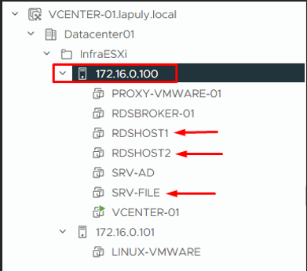
Infrastructure vCenter — ESXi 172.16.0.100 hors service
L'hôte ESXi 172.16.0.100 a un problème matériel empêchant les VM de fonctionner. Je vais restaurer les VM standard vers l'ESXi 172.16.0.101 via Restore entire VM.
2
Sélection de la fonctionnalité — Restore entire VM
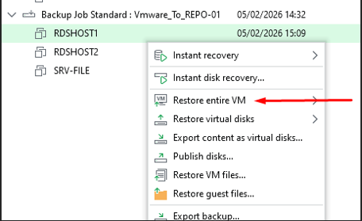
Sélection de la fonctionnalité — Restore entire VM
Je choisis la fonctionnalité Restore entire VM depuis le backup de la VM.
3
Résumé du wizard — Paramètres de restauration
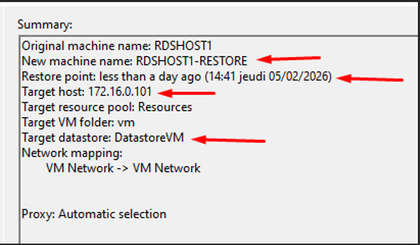
Résumé du wizard — Paramètres de restauration
VM renommée RDSHOST1-RESTORE, point de restauration spécifique sélectionné, hôte cible ESXi 172.16.0.101, placement dans le datastore DatastoreVM.
4
Log de restauration — Status : Success
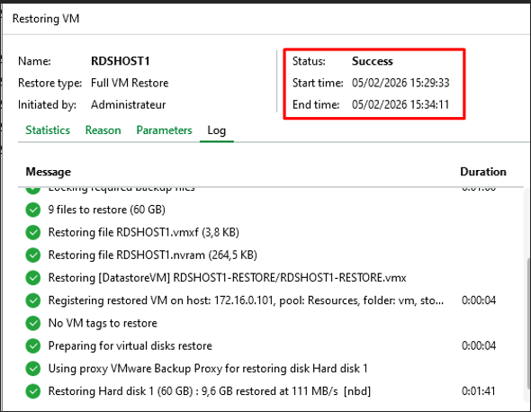
Log de restauration — Status : Success
Restauration terminée en 5 min — Status : Success.
5
VM RDSHOST1-RESTORE — ESXi 172.16.0.101
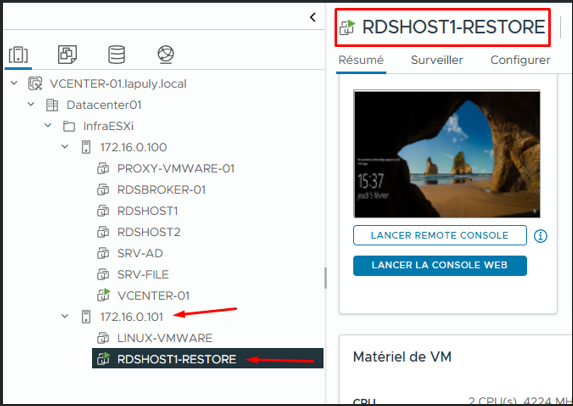
VM RDSHOST1-RESTORE — ESXi 172.16.0.101
La VM a bien été restaurée sur l'ESXi 172.16.0.101 et est visible dans vCenter.
Résultat : En cas de panne d'hyperviseur, je peux restaurer les machines virtuelles standard.
B. Instant Recovery
Ce scénario cible la restauration instantané d'une VM critique hors service sur un hyperviseur en panne.
Tableau technique de l'Instant Recovery
Élément
Description
Incident
Panne matérielle de l'hyperviseur ESXi hébergeant les VM critique
Impact
Toutes les VM critique de cet hôte sont indisponibles
Objectif
Restaurer les VM sur l'autre ESXi
RTO visé
Moins de 5 min
Solution utilisée
Instant Recovery
Principe
L'ESXi démarre la VM directement depuis un datastore vPower NFS avant que la restauration complète soit faite
Type de restauration
Démarrage instantané depuis le backup + migration de stockage une fois que l'instant recovery est fini
Cas d'usage
VM critiques, besoin de remise en service immédiate
Avantage
RTO ultra court, service rétabli en quelques secondes, pas d'attente de copie complète
a. Topologie — Instant Recovery
Voici la topologie de la restauration Instant Recovery, le Vpower envoie un Datastore NFS temporaire à l'ESXi utilisable directement.
Zoom
Topologie — Instant Recovery
b. Test — Instant Recovery
1
Infrastructure vCenter — ESXi 172.16.0.100 hors service
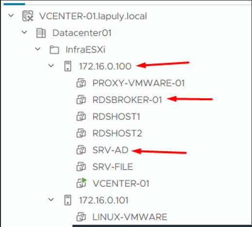
Infrastructure vCenter — ESXi 172.16.0.100 hors service
L'hôte ESXi 172.16.0.100 a un problème matériel empêchant les VM de fonctionner. Je vais restaurer les VM critique vers l'ESXi 172.16.0.101 via Instant Recovery.
2
Sélection de la fonctionnalité — Instant Recovery VM
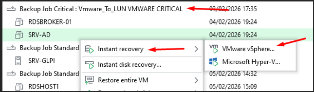
Sélection de la fonctionnalité — Instant Recovery VM
Je choisis la fonctionnalité Instant Recovery VM depuis le backup de la VM.
3
Résumé du wizard — Paramètres Instant Recovery
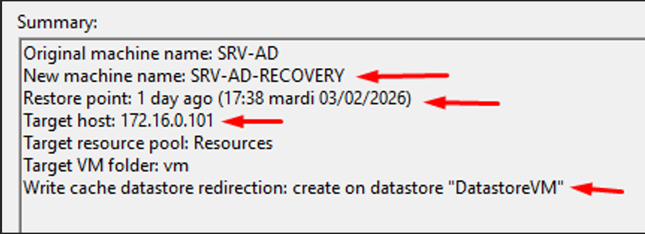
Résumé du wizard — Paramètres Instant Recovery
VM renommée SRV-AD-RECOVERY, point de restauration spécifique sélectionné, hôte cible ESXi 172.16.0.101, placement dans le datastore DatastoreVM.
4
Restauration instantanée de la VM
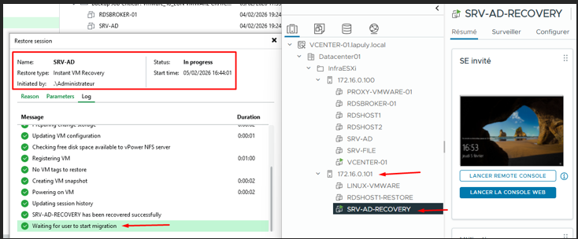
Session Instant Recovery — VM déjà opérationnelle, migration en arrière-plan
Ici on voit que la VM SRV-AD-RECOVERY est déjà démarrée alors que la restauration complète n'est pas encore faite.
Veeam affiche « Waiting for user to start migration » — la machine tourne directement depuis le backup.
Le datastore VeeamBackup en NFS est un stockage temporaire créé par Veeam. Il sert uniquement à faire tourner la VM pendant l'urgence — les performances sont correctes mais ce n'est pas fait pour rester comme ça.
Le service est revenu avant même la fin de la restauration complète.
6
Fin de l'Instant Recovery
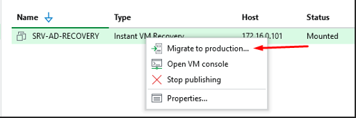
Options de fin — Migrate to production ou Stop publishing
Deux options sont disponibles pour terminer l'Instant Recovery :
Migrate to production — transfert propre de la VM vers le stockage définitif, les modifications sont conservées.
Stop publishing — arrêt immédiat sans migration, les données sont perdues.
J'utilise Migrate to production pour récupérer la VM sans perte de données.
Je restaure la VM sur l'hôte ESXi source (172.16.0.100). Toutes les modifications effectuées pendant l'Instant Recovery sont conservées et renvoyées vers le datastore source.
8
VM restaurée complètement
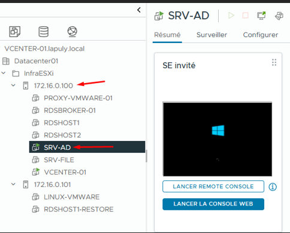
SRV-AD restaurée sur l'hôte source — Instant Recovery terminé
La VM SRV-AD est de retour sur l'hôte source. L'Instant Recovery a bien été arrêté et la session temporaire supprimée.
Résultat : En cas de panne d'hyperviseur, je peux remettre les VM critiques en service en quelques secondes via Instant Recovery.
C. Restore Application Items (AD)
Ce scénario cible la restauration d'un objet Active Directory supprimé accidentellement, sans avoir à restaurer la VM entière.
Tableau technique du Restore Application Items (AD)
Élément
Description
Incident
Suppression accidentelle d'un objet Active Directory (utilisateur, groupe, OU, mot de passe…)
Impact
Problème d'accès aux ressources, comptes bloqués ou droits perdus
Objectif
Restaurer uniquement l'objet AD sans restaurer toute la VM
RTO visé
Quelques secondes
Solution utilisée
Restore Application Items (AD)
Principe
Le Mount Server monte le backup du serveur AD et l'envoie au Backup Server, qui ouvre la base AD (NTDS.dit) via Veeam Explorer for AD. On peut alors naviguer dans l'annuaire et restaurer les objets individuellement.
Type de restauration
Restauration granulaire d'objets Active Directory
Avantage
Pas besoin de restaurer la VM entière, pas d'interruption du contrôleur de domaine, très rapide
a. Topologie — Restore Application Items (AD)
Voici la topologie du Restore Application Items. Le Mount Server monte le backup de SRV-AD et expose la base NTDS.dit au Backup Server via Veeam Explorer for AD, qui permet de restaurer les objets directement dans l'annuaire.
Zoom
Topologie — Restore Application Items (AD)
b. Test — Restore Application Items (AD)
1
Suppression des groupes COMPTABLE-GROUPS, DIRECTION-GROUPS, DSI-GROUPS…
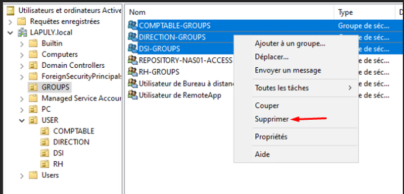
Suppression des groupes COMPTABLE-GROUPS, DIRECTION-GROUPS, DSI-GROUPS…
Je supprime plusieurs groupes AD pour simuler une suppression accidentelle.
2
Restore application items → Microsoft Active Directory objects
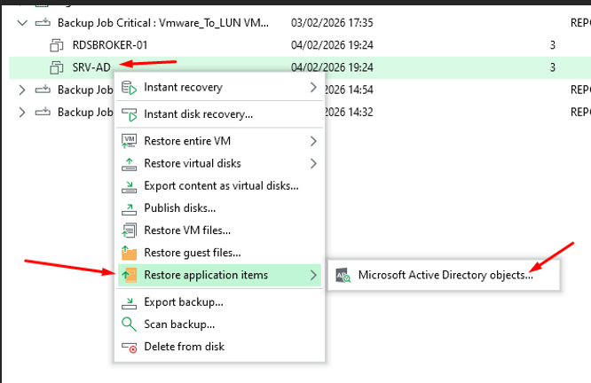
Restore application items → Microsoft Active Directory objects
Je sélectionne Restore application items sur le backup de SRV-AD, puis Microsoft Active Directory objects.
3
Point de restauration sélectionné — SRV-AD 2 days ago
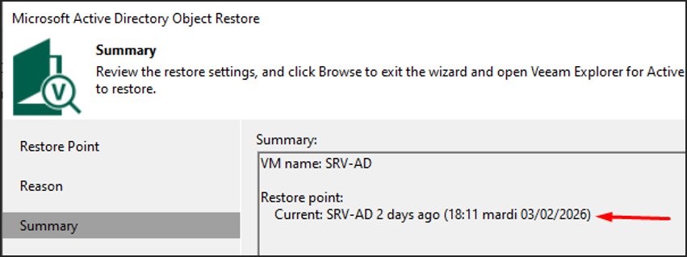
Point de restauration sélectionné — SRV-AD 2 days ago
Je choisis un point de restauration antérieur à la suppression des groupes AD.
4
Navigation sur l'AD offline via Veeam Explorer
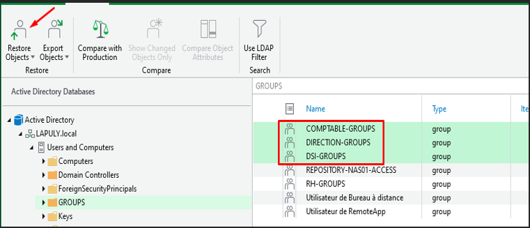
Veeam Explorer for AD — sélection des groupes à restaurer
Veeam restaure une version hors ligne de l'AD depuis le backup. Je retrouve les groupes supprimés et je les sélectionne pour les restaurer sur le serveur de production.
5
Résultat de la restauration — Restore summary
Restore summary — DIRECTION-GROUPS restauré avec succès
La restauration s'est effectuée correctement. DIRECTION-GROUPS et tous les groupes supprimés sont de retour dans l'annuaire Active Directory.
6
AD Users and Computers — groupes de retour dans l'annuaire
AD Users and Computers — groupes de retour dans l'annuaire
Tous les groupes supprimés sont bien de retour dans l'annuaire Active Directory.
Résultat : Le Restore Application Items (AD) fonctionne correctement. Les objets AD supprimés accidentellement peuvent être restaurés en quelques secondes sans interruption du contrôleur de domaine.
D. File Level Restore Linux
Ce scénario cible la restauration de fichiers supprimés accidentellement sur un serveur Linux, sans restaurer la VM entière.
Tableau technique du File Level Restore Linux
Élément
Description
Incident
Suppression accidentelle d'un dossier sur le serveur GLPI
Impact
Perte de données applicatives, scripts, fichiers de configuration
Objectif
Restaurer uniquement les fichiers nécessaires sans restaurer toute la VM
RTO visé
Quelques secondes
Solution utilisée
File Level Restore (Linux)
Principe
Veeam déploie une helper appliance Linux temporaire sur l'hyperviseur. Elle monte le disque du backup en lecture seule et expose le système de fichiers. On peut ainsi parcourir l'arborescence Linux et restaurer les fichiers vers la VM source ou une autre destination.
Type de restauration
Restauration granulaire de fichiers et dossiers
Cas d'usage
Suppression d'un fichier, erreur de configuration, récupération rapide de données
Avantage
Rapide, ciblé, pas d'arrêt de la VM, très peu d'impact utilisateur
a. Topologie — File Level Restore Linux
Veeam déploie une appliance Linux temporaire sur SRV-HYPERV. Elle monte le backup de SRV-GLPI depuis NAS-02 et expose le système de fichiers via SSH pour permettre la restauration directe sur la VM source.
Zoom
Topologie — File Level Restore Linux
b. Test — File Level Restore
1
Suppression du dossier
Terminal SRV-GLPI — suppression du dossier testVEAM
Je supprime le dossier testVEAM via rm -R pour simuler une suppression accidentelle.
2
Lancement de la restauration
Menu Veeam — Restore guest files
Je sélectionne Restore guest files sur le backup de SRV-GLPI pour accéder à l'arborescence Linux.
3
Paramètres réseaux de l'appliance
Helper Appliance
Configuration de la helper appliance Linux :
Hyperviseur hôte : SRV-HYPERV (192.168.200.200)
IP fixe : 192.168.200.59 — masque, passerelle et DNS configurés
L'appliance monte le disque du backup et expose l'arborescence Linux
4
Hyper-V — VeeamFLR_SRV-GLPI déployée aux côtés de SRV-GLPI
Hyper-V — VeeamFLR_SRV-GLPI déployée aux côtés de SRV-GLPI
L'appliance VeeamFLR_SRV-GLPI a bien été créée sur l'hyperviseur.
5
Navigation dans l'arborescence Linux
Veeam file browser — testVEAM visible dans l'arborescence du backup
Je navigue dans l'arborescence Linux depuis le backup. Le dossier testVEAM est visible et sélectionnable pour la restauration.
6
Restauration vers une machine Windows — destination
Destination de restauration — dossier Downloads sur TEST-RESTORE
Je restaure le dossier testVEAM vers un répertoire Windows sur une autre machine.
7
Restauration vers une machine Windows — résultat
testVEAM restauré dans les Téléchargements
Le dossier testVEAM apparaît bien dans l'Explorateur Windows.
Résultat : Le File Level Restore Linux fonctionne correctement. Les fichiers supprimés peuvent être récupérés depuis le backup sans redémarrer la VM.
E. Virtual disk restore
Ce scénario cible la restauration d'un disque virtuel corrompu sans avoir à restaurer la VM entière.
Tableau technique du Virtual disk restore
Élément
Description
Incident
Corruption du disque virtuel pour le RDSHOST01
Impact
Perte de données sur un volume précis, application inutilisable
Objectif
Restaurer uniquement le disque virtuel sans restaurer toute la VM et brancher le disque sur une autre VM
RTO visé
Quelques dizaines de minutes
Solution utilisée
Virtual disk restore
Principe
Veeam extrait un disque virtuel depuis le backup et le restaure sur un datastore et une VM utilisable
Type de restauration
Restauration ciblée d'un disque virtuel (VMDK)
Cas d'usage
Disque de données corrompu, besoin de récupérer un volume précis
Avantage
Pas de restauration complète de la VM, plus rapide et plus flexible
a. Topologie — Virtual disk restore
Veeam extrait le VMDK corrompu de SRV-RDSHOST2 depuis le backup sur REPO-01, puis le restaure sur un datastore VMware et l'attache à une VM cible.
Zoom
Topologie — Virtual disk restore
b. Test — Virtual Disk Restore
1
Disque virtuel corrompu
Datastore DATASTORE-VM01 — RDSHOST1 vmdk corrompu
Le disque virtuel du RDSHOST1 est corrompu.
2
Disk Mapping — RDSHOST1.vmdk attaché à SRV-FILE en SCSI 0:1
Disk Mapping — RDSHOST1.vmdk attaché à SRV-FILE en SCSI 0:1
Je sélectionne SRV-FILE comme VM cible. Le disque est attaché en tant que disque secondaire (SCSI 0:1), sans écraser le disque système. Il est stocké sur DATASTORE-VM01 pour permettre la récupération des données.
3
Résultat de la restauration
Log Veeam — Restore completed successfully
La restauration s'est bien exécutée avec un RTO de 4 minutes.
4
SRV-FILE — Disque dur 2 : RDSHOST1.vmdk récupéré du backup
SRV-FILE — Disque dur 2 : RDSHOST1.vmdk récupéré du backup
SRV-FILE a bien récupéré le disque restauré de SRV-RDSHOST01. Il apparaît en tant que Disque dur 2 (60 Go) dans les paramètres de la VM.
Résultat : Le Virtual disk restore fonctionne correctement. Un disque virtuel corrompu peut être extrait du backup et rattaché à une VM en quelques minutes.
F. Bare Metal Recovery
Ce scénario couvre la restauration complète d'un hyperviseur physique détruit, sur un nouveau matériel, sans aucune réinstallation manuelle.
Tableau technique du Bare Metal Recovery
Élément
Description
Incident
L'hyperviseur Hyper-V01 a brûlé et n'est plus du tout utilisable
Impact
Serveur totalement inutilisable, arrêt complet des services
Objectif
Restaurer intégralement le serveur sur une nouvelle machine physique
RTO visé
Minutes à quelques heures
Solution utilisée
Bare Metal Recovery
Principe
Un ISO de recovery est généré. La nouvelle machine démarre sur cet ISO, permettant de sélectionner un point de restauration et de restaurer l'intégralité du système
Type de restauration
Restauration complète du serveur (OS, configurations, pilotes, données, applications)
Cas d'usage
Serveur physique détruit, panne matérielle grave, remplacement complet de machine
Avantage
Restauration fidèle du serveur sur un nouveau matériel, aucune réinstallation manuelle
a. Topologie — Bare Metal Recovery
L'ISO de recovery est stocké sur NAS-02. La nouvelle machine (SRV-HYPERV-RECOVERY) démarre sur cet ISO pour restaurer l'intégralité du système depuis le point de sauvegarde.
Zoom
Topologie — Bare Metal Recovery
b. Test — Bare Metal Recovery
1
Création de l'ISO de restauration
Create Recovery Media — paramètres de création de l'ISO
ISO image file : format universel pour booter sur n'importe quelle machine physique.
Include network connection settings : intègre la config réseau (IP, DNS) pour accéder au repository dès le démarrage.
Include hardware drivers from this computer : embarque les pilotes réseau et stockage pour garantir la détection du matériel.
Include additional storage and network drivers : j'ajoute DriverStore\FileRepository pour maximiser la compatibilité sur un matériel différent.
2
ISO créée
VeeamRecoveryMedia_SRV-HYPERV-01.iso généré avec succès
L'ISO de restauration VeeamRecoveryMedia_SRV-HYPERV-01 a bien été créée.
3
Nouvelle machine — configuration identique
Hyperviseur HS
SRV-HYPERV01 — machine hors service
Hyperviseur Restauré
SRV-HYPERV-RECOVERY — nouvelle machine
La nouvelle machine offre des performances similaires à l'ancienne pour garantir la compatibilité lors de la restauration.
4
Boot sur Veeam Recovery Media
Veeam Recovery Media — sélection de Bare Metal Recovery
Dans un scénario de machine physique HS, je vais faire un Bare Metal Recovery, car elle permet une restauration complète depuis le repository Veeam.
5
Emplacement du backup
Backup Location — sélection du stockage réseau
La restauration s'effectue depuis un repository distant. Je sélectionne Network storage pour pointer vers le repository Veeam.
6
Connexion au Backup Server
Backup Server — IP 172.16.0.10 avec le compte veeamadm
J'indique l'IP du Backup Server (172.16.0.10) ainsi que le compte de service veeamadm.
7
Sélection du backup — BackupJob3 / Host-HyperV_To_REPO-02
Sélection du backup — BackupJob3 / Host-HyperV_To_REPO-02
Je choisis le backup issu de mon Backup Job 3.
8
Points de restauration disponibles — SRV-HYPERV-01
Points de restauration disponibles — SRV-HYPERV-01
Je sélectionne le point de restauration souhaité.
Je choisis le backup issu de mon Backup Job 3 ainsi que le point de restauration souhaité.
9
Configuration du mapping de disque
Disk Mapping — partitions système et données mappées manuellement
Je réalise un mapping manuel des disques : les partitions système (EFI et C:) sont restaurées sur le disque de 60 Go, et le volume de données sur le disque séparé de 150 Go, assurant un démarrage correct sur le nouveau matériel.
10
Restauration en cours
Log — Restore process finished at 06/02/2026 16:44:44
La restauration s'est effectuée correctement. Toutes les étapes sont validées avec succès.
11
Système opérationnel
Nouvelle machine Hyper-V — démarrage et connexion opérationnels
La nouvelle machine Hyper-V est opérationnelle et peut être utilisée avec les mêmes configurations que l'ancienne.
Résultat : Le Bare Metal Recovery fonctionne correctement. En cas de destruction totale du serveur physique, l'intégralité du système peut être restaurée sur un nouveau matériel sans aucune réinstallation manuelle.
IX. Conclusion
Ce projet m'a permis de mettre en place une solution complète de sauvegarde et de restauration basée sur Veeam Backup & Replication, en m'appuyant sur une infrastructure segmentée (LAN VMware, LAN Hyper-V, LAN Off-Site) et sur une stratégie conforme aux bonnes pratiques de résilience (3-2-1-1 avec copie off-site et immutabilité).